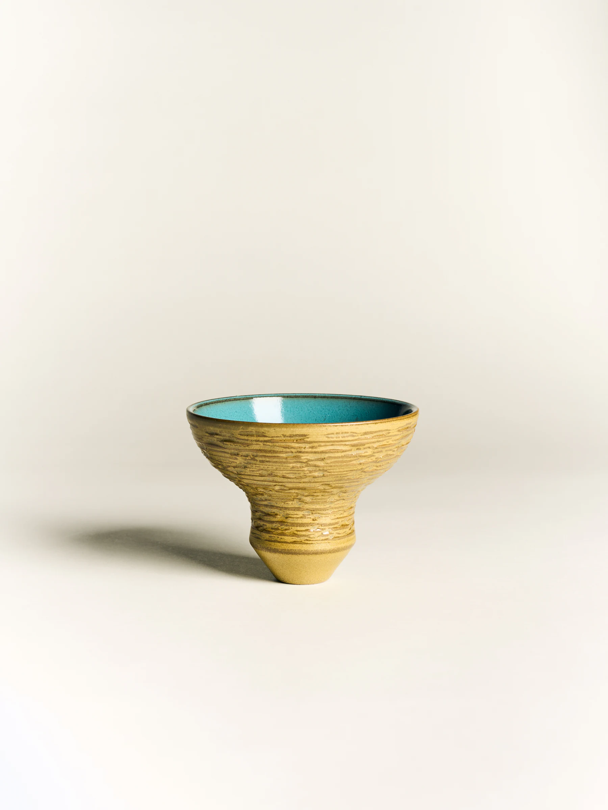
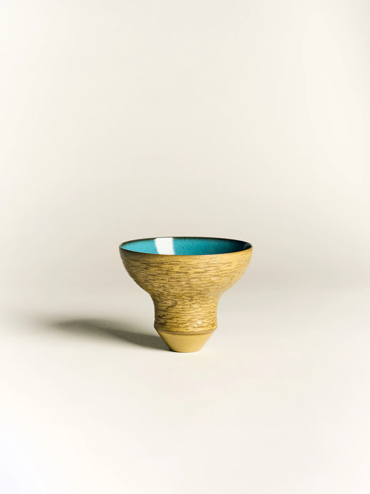

03 / PHILOSOPHYARTICLES
HOW OBJECTS ENTER EVERYDAY LIFE
An inquiry into material, touch and the quiet relationship between an object and the body.



An inquiry into material, touch and the quiet relationship between an object and the body.

